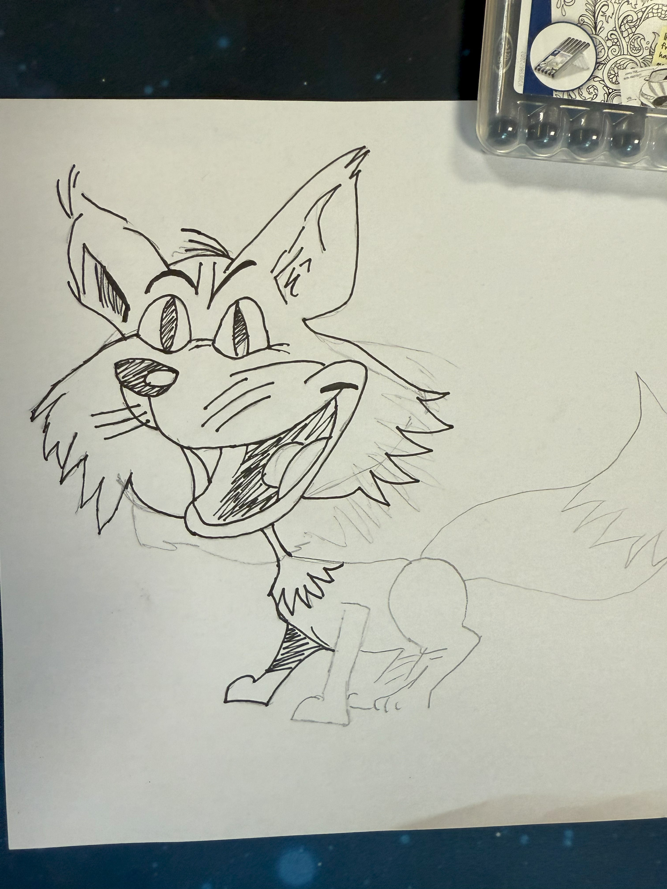

De eerste stap van het proces was het schetsen van het ontwerp op papier. Dit is persoonlijk niet mijn sterkste punt, omdat ik het soms lastig vind om mijn ideeën meteen goed op papier te zetten. Toch merkte ik tijdens het schetsen dat het steeds beter begon te lopen. Uiteindelijk ben ik tevreden met het resultaat en vind ik dat de schets goed gelukt is. Ik ben er trots op dat het me gelukt is om mijn idee visueel uit te werken, ondanks dat dit niet mijn comfortzone is.